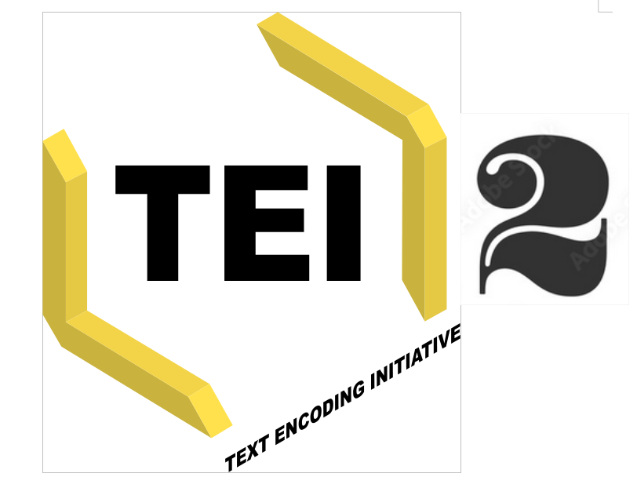
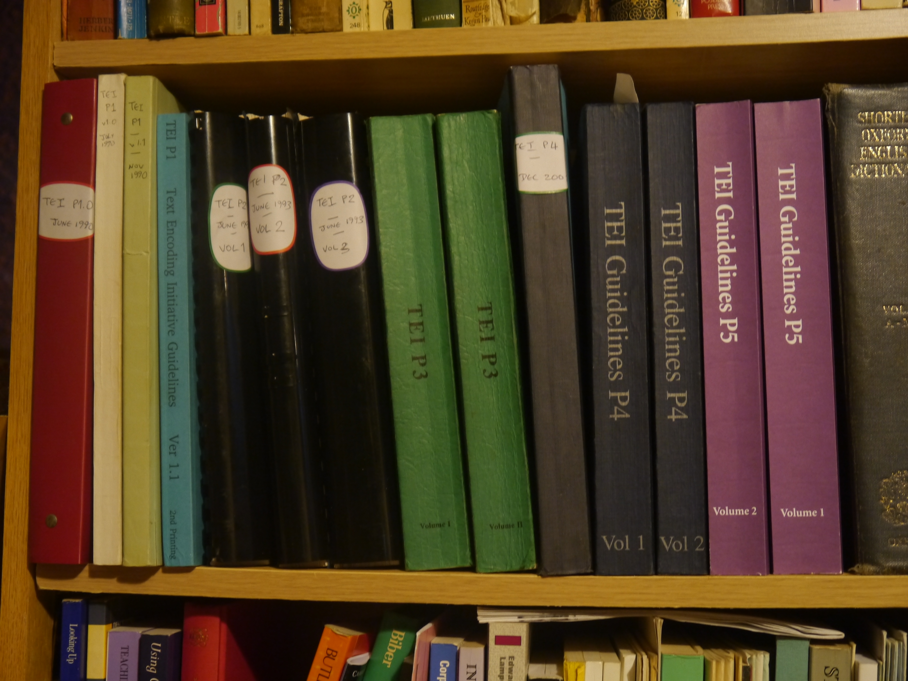
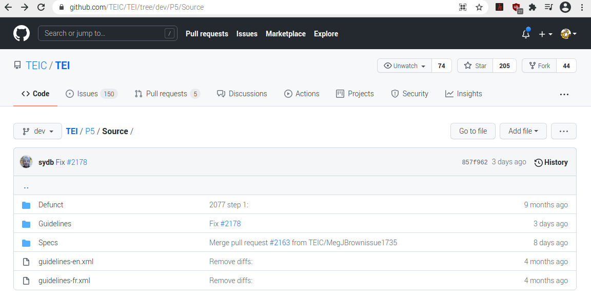
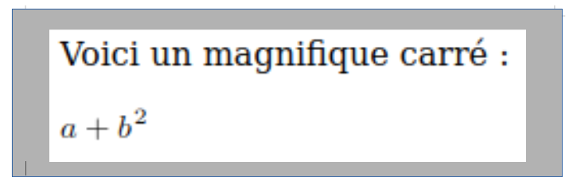
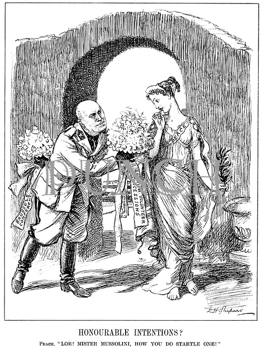
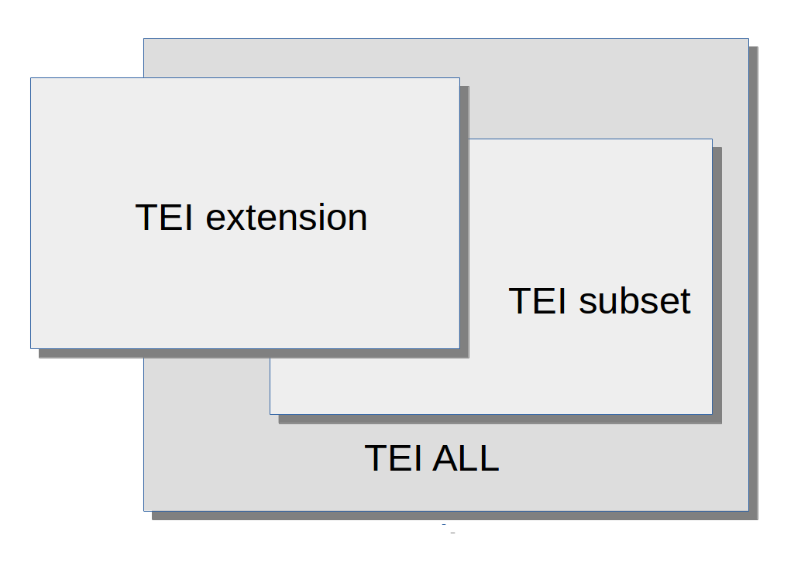

ODD : Attendez, ce n’est pas tout !
ODD : Attendez ce n’est pas tout !
- ODD comme système de documentation : structuration des ODDs
- Définir des contraintes supplémentaires : utilisation de schematron
- Intégration des encodages non-TEI : xenoData et mathML
- Documenter ses intentions : le Processing Model
- Enchaînement et combinaison d’ODDs
- Qu’est-ce qu’être conforme à la TEI ?
ODD comme système de documentation
Ecrire son ODD : bonnes pratiques
ODD est un langage conçu pour faciliter la documentation systématique. Il fournit donc des balises spécialisées pour distinguer :
- <code> : un morceau de code exprimé dans n’importe quel langage formel
<code lang="C">count += 56;</code>
- <att> : un nom d’attribut
The <att scheme="TEI">target</att> attribute indicates a URI
- <gi> : un nom d’élément
The
<gi>table</gi> element is for...
- <ident> : identifiant ou nom d’un objet en n’importe quel langage formel
The <ident type="class">model.biblLike</ident> class
- <val> : valeur d’attribut
Cet
attribut porte la valeur <val>unknown</val>
- <tag> : balise XML
<tag>ptr
target="http://www.bbc.co.uk"/</tag>
Structuration d’un ODD
Mis à part le <schemaSpec> qui définit le schéma, on peut organiser un document ODD comme tout autre document TEI, utilisant <div>, <list>, etc.
Au sein de ce document, des éléments supplémentaires sont prévus pour le regroupement des déclarations à l’extérieur du <schemaSpec> :
Un exemple plus ambitieux…

The TEI Guidelines : analog editions
Mais depuis longtemps...

The TEI Guidelines : fons et origo
ODD est un langage de spécification...
La TEI elle-même s’exprime en langage ODD. Ce fut d’ailleurs la raison principale pour laquelle le langage fut inventé
La source TEI P5 (disponible ici http://www.tei-c.org/release/xml/tei/odd/Source/) rassemble :
- 39 fichiers en TEI-XML, dont 25 contiennent un chapitre de documentation en XML-TEI, la plupart (21) définissant un module, par exemple PH-PrimarySources.xml
- environ 800 fichiers en TEI-XML, chacun définissant un élément, une classe, un type de données, ou une macro; plus précisément:
- 32 <dataSpec> définissant un type de données (teidata.xxxx) par ex. teidata.percentage
- 122 <classSpec type="model"> définissant une classe de type modèle (
model.xxxx) par ex. model.biblLike.xml - 77 <classSpec type="att"> définissant une classe de type attribut (
att.xxxx) par ex. att.divLike.xml - 6 <macroSpec> définissant une macro (
macro.xxxx) par ex. macro.phraseSeq.xml - 580 <elementSpec> définissant un élément, de ab.xml jusqu'à zone.xml
Organisation physique des Guidelines
Il ne faut pas confondre l’organisation physique (en fichiers) avec l’organisation logique (en spécifications, etc.)
- Le fichier guidelines-XX.xml est la source primaire des Guidelines pour la langue XX.
- Mis à part quelques liminaires (un en-tête TEI, la page de titre, etc.), il contient plusieurs lignes comme ceci :
<include xmlns="http://www.w3.org/2001/XInclude" href="Guidelines/en/HD-Header.xml"/> - Au sein de chaque chapitre, on trouve des
xInclude similaires pour les objets définis par ce chapitre.
Organisation logique des Guidelines
- À la fin de chaque chapitre définissant un module, il y a (par convention) un élément <moduleSpec> qui rassemble toutes les spécifications référencées par le chapitre pour définir un module
- Ces spécifications sont organisées (par commodité) en <specGrp>, qui sont ensuite référencées par un <specGrpRef>
- Chaque <specGrp> regroupe des spécifications d’objet, indiquées par un
xInclude
Définir des contraintes supplémentaires
Utilisation de schematron
- Une spécification d’élément peut proposer des contraintes supplémentaires sur son contenu en utilisant un ou plusieurs éléments <constraintSpec>
- Ces règles sont exprimées (typiquement) en utilisant le langage ISO Schematron dans son propre espace de noms; la règle est emballée dans un <constraint>
<elementSpec ident="div"
module="teistructure" mode="change"
xmlns:s="http://purl.oclc.org/dsdl/schematron">
<constraintSpec ident="div"
scheme="isoschematron">
<constraint>
<s:assert test="@type='prose' and .//tei:p"> une division de prose doit contenir au moins un paragraphe</s:assert>
</constraint>
</constraintSpec>
</elementSpec>
L’élément <constraintSpec>
Il définit une contrainte qui s’applique au sein de l’élément dans lequel il est déclaré (on peut modifier cela en utilisant l'attribut s:context)
- L’attribut ident est obligatoire : il fournit un identifiant unique
- L’élément <constraint> contient (typiquement) un <assert> ou un <report>, éléments de l’espace de noms
http://purl.oclc.org/dsdl/schematron - Le contenu de l’élément <assert> est affiché si le test est false
- Le contenu de l’élément <report> est affiché si le test est true
- Astuce : plusieurs éléments schematron sont disponibles pour enrichir le texte du message affiché, notamment <name> (contexte) et <value-of> (valeur)
Un schéma RNG intégrant ces règles sera auto-généré si l’on utilise le logiciel oXygen pour traiter son ODD
Applications typiques des règles Schematron
- Contraintes contextuelles : ‘au sein d’un <titleStmt>, il faut fournir un <title type='main'>’
- Contraintes de concurrence : ‘si l’attribut X a la valeur A, l’élément qui le porte doit contenir un Y’
- Contraintes textuelles : ‘Les caractères ' et “ ne sont pas permis au sein d’un <p> apparaissant dans le <body>’
- Contraintes contextuelles : ‘les mots en français (xml:lang='fr') ne sont pas permis au sein d’un élément latin (xml:lang='la')’
- Intégrité référentielle : ‘un pointeur exprimé sous la forme d’une URL et commençant par # doit correspondre à un élément ayant un xml:id identique quelque part dans le document’
Par exemple…
<constraintSpec ident="titleConstraint"
xmlns:s="http://purl.oclc.org/dsdl/schematron">
<constraint>
<s:assert test="tei:fileDesc/tei:titleStmt/tei:title[@type='main']"> il faut fournir un titre principal
</s:assert>
</constraint>
</constraintSpec>
<elementSpec ident="figure"
xmlns:s="http://purl.oclc.org/dsdl/schematron">
<constraintSpec ident="demo-c2">
<constraint>
<s:report test="not(tei:figDesc or tei:head)"> Votre figure ne contient ni un
figDesc ni un head : aucun attribut <att>alt</att> n'est générable</s:report>
</constraint>
</constraintSpec>
</elementSpec>
Un schematron plus complexe
<constraintSpec ident="validtarget">
<constraint>
<s:rule context="tei:*[@target]"> <s:let name="results"
value="for $t in tokenize(normalize-space(@target),'\s+') return starts-with($t,'#')
and not(id(substring($t,2)))"/>
<s:report test="some $x in $results satisfies $x"> Erreur: Chaque pointeur dans "<s:value-of select="@target"/>" doit cibler un ID
dans ce même document (<s:value-of select="$results"/>)</s:report>
</s:rule>
</constraint>
</constraintSpec>
normalize-space(@target) : supprimer les blancs non-signifiantstokenize(normalize-space(@target),'\s+') : couper la valeur de l’attribut dans des tokens séparés par des blancsstarts-with($t,'#') : ne considérer que les pointeurs locauxnot(id(substring($t,2))): y-a-t il un attribut xml:id dont la valeur correspond à la valeur indiquée en sélectionnant ce qui suit son 2ème caractèresome $x in $results satisfies $x : expression XPath permettant la validation d’une séquence de valeurs booléennes (vraies/fausses)
Intégration des encodages non-TEI : xenoData et mathML
Inclusion des métadonnées non-TEI
Pour inclure les éléments non-TEI dans notre document, il est judicieux de les envelopper dans un élément explicitant leur statut.
Par ex. on peut inclure des métadonnées non-TEI en utilisant
<xenoData> <xenoData
xmlns:dc="http://purl.org/dc/elements/1.1/"
xmlns:rdf="http://www.w3.org/1999/02/22-rdf-syntax-ns#">
<rdf:RDF>
<rdf:Description rdf:about="http://www.worldcat.org/oclc/606621663"> <dc:title>The description of a new world,
called the blazing-world</dc:title>
<dc:creator>The Duchess of Newcastle</dc:creator>
<dc:date>1667</dc:date>
<dc:identifier>British Library, 8407.h.10</dc:identifier>
<dc:subject>utopian fiction</dc:subject>
</rdf:Description>
</rdf:RDF>
</xenoData>
Cette approche risque evidemment de fournir des informations redondantes voire incohérentes...
Inclusion d'expressions MathML
MathML est un langage XML très complet pour la représentation des expressions mathématiques. Comment faire pour intégrer de telles expressions dans un document TEI ?
Il faut
- inclure les composants du schéma MathML au schéma TEI
- modifier le modèle de contenu de l’élément TEI <formula>
- résoudre les éventuels conflits de nommage : il y a un élément <list> dans TEI mais également dans MathML !
TEI + MathML : le ODD
<schemaSpec ident="tei_math" prefix="tei_"
start="TEI teiCorpus">
<moduleRef url="http://www.tei-c.org/release/xml/tei/custom/schema/relaxng/mathml2-main.rng"/>
<moduleRef key="header"/>
<moduleRef key="core"/>
<moduleRef key="tei"/>
<moduleRef key="textstructure"/>
<moduleRef key="figures"/>
<elementSpec module="figures"
ident="formula" mode="change">
<content>
<elementRef key="mathml.math"/>
</content>
</elementSpec>
</schemaSpec>
L’attribut prefix nous permet de distinguer les identifiants ressortant des schémas différentes
TEI + MathML : le document

<p> Voici un magnifique carré :</p>
<formula notation="mathML">
<math xmlns="http://www.w3.org/1998/Math/MathML">
<mrow>
<msup>
<mfenced>
<mrow>
<mi>a</mi>
<mo>+</mo>
<mi>b</mi>
</mrow>
</mfenced>
<mn>2</mn>
</msup>
</mrow>
</math></formula>
Documenter les intentions : le "Processing Model"

Ajout d’un ‘processing model’(modèle de traitement)
Vous pouvez enrichir votre documentation ODD avec des déclarations précises sur la manière dont des éléments particuliers devraient être mis en forme.
Cela est complémentaire aux fonctionnalités offertes avec rend et style qui décrivent la manière dont la source originale (non-digitale) a été formatée.
Un élément <model> peut documenter le behaviour attendu pour le traitement d’un élément:
Le concept de behaviour est introduit pour définir des concepts de formattage employés communément, par exemple, ‘block’, ‘inline’, ‘pointer’, etc.
<elementSpec mode="change" ident="quote">
<model predicate="ancestor::p"
behaviour="inline"/>
<model predicate="not(ancestor::p)"
behaviour="block"/>
<desc xml:lang="fr">Traiter un <gi>quote</gi> contenu d'un<gi>p</gi> comme "inline"; ailleur, comme "block"</desc>
</elementSpec>
Le fonctionnement d'un ‘behaviour’ peut etre modifié selon ses paramètres
Behaviours : quelques exemples
| behaviour | parametres | fonction |
|---|
| alternate | (default, alternate) | supporte la présentation de visualisations alternatives, par exemple en rendant le contenu préféré, en le présentant en parallèle, ou en bien en permettant de passer de l’un à l’autre. |
| graphic | (url, width, height, scale, title) | si url est présent, l’utiliser pour rendre l’élément graphic, sinon rendre une image placeholder. |
| omit | | ne rien faire, ne pas traiter les enfants |
| inline | (content, label | créer un élément inline | | |
Usage du model
- on peut fournir plusieurs <model> dans un seul <elementSpec>, pour indiquer que plusieurs traitements sont possibles dans des situations differentes
- on peut specifier le/s contextes dans lesquels ce model s'applique avec l'attribut predicate
<elementSpec mode="change" ident="quote">
<model predicate="ancestor::p"
behaviour="inline">
<desc xml:lang="fr">si à l'intérieur d'un
paragraphe, affichage inline</desc>
</model>
<model predicate="not(ancestor::p)"
behaviour="block">
<desc xml:lang="fr">si à l'exterieur d'un paragraphe, affichage en
bloc</desc>
</model>
</elementSpec>
- on peut spécifier l'affichage d'un élément
- explicitement, avec <outputRendition>
- indirectement avec cssClass en faisant référence à une classe CSS
- indirectement avec useSourceRendition
<elementSpec mode="change" ident="ident">
<model behaviour="inline">
<outputRendition>font-weight:bold</outputRendition>
</model>
<desc xml:lang="fr">Afficher l'element <gi>ident</gi> en gras et inline</desc>
</elementSpec>
Ce système est utilisé in extenso par l'outil TEI Publisher: voir https://teipublisher.com/exist/apps/tei-publisher/doc/documentation.xml
Combien d'ODD faut-il dans un projet?
Enchaînement et combinaison d’ODDs
Usage de l’attribut source
L’attribut source sert à spécifier la source des déclarations qu’on souhaite intégrer : par défaut celles de la version la plus récente de TEI P5.
Ou bien…
<schemaSpec ident="test2" prefix="tei_"
start="TEI" source="tei:1.5.0">
</schemaSpec>
<schemaSpec ident="test3" prefix="tei_"
start="TEI"
source="https://www.tei-c.org/Vault/P5/1.5.0/xml/tei/odd/p5subset.xml">
</schemaSpec>
<schemaSpec ident="test4"
source="myCompiled.odd">
</schemaSpec>
source peut être utilisé sur <classRef>, <elementRef>, <macroRef>, et <moduleRef> : il doit pointer vers un ODD compilé
"Compilation" d'un ODD
Rappel: un ODD peut rassembler deux types d’objet:
- des spécifications explicites, plus ou moins complétées
- des références à de telles spécifications
L'attribut source doit pointer sur un ODD où
- tous les références sont résolues et remplacées par la spécification referencée
- toutes les déclarations partielles pour un seul objet sont résolues
Nous appelons cette procédure "compilation" et elle est effectuée par une feuille de style XSLT odd2odd
Usage d’un ODD compilé
Supposons une version compilée du schéma TEI-bare. Nous allons réutiliser TEI-bare, mais nous souhaitons supprimer l’élément <head>
<schemaSpec ident="Bare-minus"
source="tei_bare.compiled.odd" start="TEI">
<moduleRef key="tei"/>
<moduleRef key="header"/>
<moduleRef key="core" except="head"/>
<moduleRef key="textstructure"/>
</schemaSpec>
Notez qu’on ne peut supprimer ou modifier que les choses qui sont déjà présentes dans l’ODD compilé spécifié par l’attribut source.
Chaînage : super-ensemble
Nous allons réutiliser TEI-bare, mais nous souhaitons ajouter le module gaiji
<schemaSpec ident="Bare-plus"
source="tei_bare.compiled.odd" start="TEI">
<moduleRef key="tei"/>
<moduleRef key="header"/>
<moduleRef key="gaiji"
source="http://www.tei-c.org/release/xml/tei/odd/p5subset.xml"/>
<moduleRef key="textstructure"/>
</schemaSpec>
Le <moduleRef> qui va fournir le module gaiji utilise son propre attribut source pour spécifier où aller chercher les déclarations de ce module.
Rétablir un élément supprimé
Nous allons ramener l'élément <q> qui a été effacé du schéma compilé :
<schemaSpec ident="Bare-plus"
source="tei_bare.compiled.odd" start="TEI">
<moduleRef key="tei"/>
<moduleRef key="header"/>
<elementRef key="q" source="tei:3.0.0"/>
<moduleRef key="textstructure"/>
</schemaSpec>
Chaînage ODD : exercice
- Supposons que vous allez créer un system de "crowdsourcing" pour faciliter la transcription d'une archive documentaire. Une fois transcrit, chaque document sera enrichi avec des métadonnées riches
- On aura donc besoin d'au moins deux schémas:
- un schéma adapté aux transcriptions
- un schéma adapté aux métadonnées
- En sus, il va falloir valider les documents complets, donc un schéma adapté à tous les deux ..
- Notons d'ailleurs la présence des elementRef etc. communs aux deux schémas
Le chaînage ODD est la réponse!
D'abord, la "mère porteuse"
Dans votre dossier Work ouvrez d'abord le fichier motherODD.xml
- C'est un ODD typique, avec élément de racine <TEI>, défini par rapport aux Guidelines complètes
- il fournit
- des elementRef nécessaire pour la transcription (par ex. <pb>, <p>, <hi>)
- des elementRef nécessaires pour les métadonnées (par ex. <sourceDesc>, <xenoData>)
- des elementRef nécessaires pour l'enrichissement des transcriptions (par ex <listPerson>, <person>)
- Le schéma ressortissant de cet ODD sera très générique, trop permissif pour nos besoins : nous allons donc le spécialiser.
Procédure - définition de transformation
Nous allons d'abord "compiler" cet ODD. La feuille de style nécessaire n'est pas disponible par défaut dans oXygen : il faut donc créer une scénario de transformation
- Cliquez CTRL-MAJ-C. Cliquez Nouveau, et sélectionnez "XML transformation avec XSLT".
- Nommez la transformation ODDcompile
- Laisser XML URL tel quel. Changer XSL URL pour pointer vers ${frameworks}/tei/xml/tei/stylesheet/odds/odd2odd.xsl (oui, il y a bien deux tei dans ce chemin). Cliquer sur l'onglet "Sortie".
- Dans la boîte Enregistrer sous taper ${cfn}_compiled.xml comme nom du fichier de sortie. Cliquer OK pour revenir.
- Le scénario ODDcompile est maintenant associé avec notre ODD. Cliquer "
Appliquer le/les scénario(s) associé(s)" pour le mettre en marche. - Si tout va bien, vous allez trouver un nouveau fichier motherODD_compiled.xml dans votre dossier de travail
Procédure - création des spécialisations
Regardez maintenant les deux fichiers justTranscript.odd et justMetadata.odd. Notez bien que chacun de ces fichiers ODD fait référence au motherODD_compiled.xml dans son attribut source. Notez également que les deux précisent des valeurs différentes pour leur attribut start. Pourquoi?
- Transformez justTranscripts.odd en utilisant les scénarios
TEI ODD XHTML et TEI ODD to RELAX NG (compact syntax) qui sont intégrés dans oXygen - Créez un nouveau fichier XML (CTRL-N)
- Spécifiez que ce fichier se valide avec le schéma out/justTranscription.rnc en utilisant le bouton Personnaliser
- Vérifiez l'effet des contraintes du schéma
- Ouvrez le fichier transcription.xml et validez-le avec le schéma out/justTranscription.rnc
- Ensuite, faire pareil pour les fichiers justMetadata.odd et metadata.xml
Validation du document complet
Notre projet va créer des centaines de petit document, un par transcription. Nous disposons maintenant d'une méthode pour les valider un à la fois. Comment faire pour valider un ensemble de ces petits fichier ? Il y a plusieurs réponses possibles. Nous en proposons une très simple : l'usage du standard XInclude
- D'abord il faut un troisième schéma, qui combine les deux autres. Rouvrez donc le fichier motherODD.xml et transformez-le en un schéma générique.
- Ouvrez maintenant le fichier driver.tei et validez-le avec votre schéma motherODD.rnc
- Ce driver nous a permis de combiner dans un seul élément <TEI> une transcription seule avec ses propres métadonnées. Comment combiner plusieurs documents ? Pour cela, nous aurons besoin de l’élément <teiCorpus> qui rassemble plusieurs <TEI>.
- Ouvrez donc le fichier corpusDriver.tei. Vous devez utiliser votre imagination et votre créativité pour compléter l'exemple en ajoutant d'autre transcriptions ! En faisant cela, notez bien la nécessité d’éviter les doublons dans les métadonnées, et en conséquence de faire une espèce de factorisation des métadonnées...
Qu’est-ce qu’être conforme à la TEI ?
Variétés de l'ODD

- Chacune de ces formes représente :
- un ODD
- le schéma généré à partir de cet ODD
- l'ensemble de documents considérés comme valides selon ce schéma
- un ‘TEI subset’ fournit un sous-ensemble des composants constituant TEI All
- un ‘customised subset’ est également un sous-ensemble avec des personnalisations supplémentaires
- un ‘extended subset’ contient des composants qui ne font pas partie de TEI All
Le plus simple
- Vos modifications génèrent un schéma réduit, plus précis, plus adapté à votre projet et une documentation plus exacte et correcte pour votre communauté d'utilisateurs
- Mais vos documents restent toujours valides par rapport à TEI All et vous respectez toujours le modèle sémantique de la TEI.
- Les extensions éventuelles sont signalées clairement, en utilisant une autre espace de nommage, et sont d’ailleurs expliquées dans votre ODD
Qu’est-ce signifie « être conforme à la TEI » ?
- être honnête : Les éléments XML qui sont déclarés comme appartenant au namespace TEI doivent respecter les définitions TEI de ces éléments
- être explicite : Pour valider un document TEI, un ODD est fortement conseillé, parce que cela mettra en évidence toutes les modifications effectuées.
Plus formellement, pour un document TEI conforme :
- il doit être un document XML bien-formé
- si la construction de son schéma ne prend en compte que les éléments appartenant à l’espace de nommage TEI, l'ensemble de documents considéré comme valide par ce schéma devrait être un sous-ensemble de l'ensemble de documents considéré valide par le schéma TEI-ALL.
- Tout autre élément présent doit appartenir à un autre namespace
L’objet de ces règles est de simplifier le ‘blind interchange’ des documents ; elles ne le garantissent pas.
Les limites de la personnalisation
- Est-ce que l’on peut supprimer n’importe quoi ? par ex. <title> ?
- À quoi servent les classes vides ?
- Est-ce qu’on peut ajouter n’importe quoi ? quelles limitations ?
L’enjeu c’est de permettre à une autre personne/système de comprendre votre encodage, non pas forcément de la contraindre à vous suivre aveuglement !
Voir What is TEI Conformance, and Why Should You Care? ( https://doi.org/10.4000/jtei.1777)
Ressources
- Information faisant autorité
- Matériaux pédagogiques
- Lectures supplémentaires